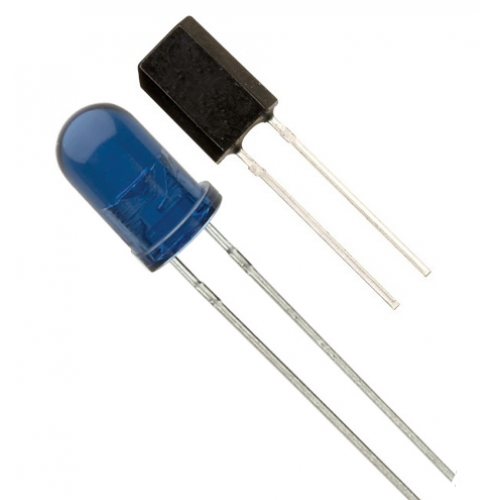

Technical Understanding 2
Table of Contents

1 How electronic systems offer functionality to design solutions
6.4a Demonstrate an understanding of how electronic systems provide input, control and output process functions, including:
i. Switches and sensors, to produce signals in response to a variety of inputs.
Click on this link to read more about switches and sensors.
An electrical switch is any device used to interrupt the flow of electrons in a circuit. Switches are essentially binary devices: they are either completely on (“closed”) or completely off (“open”).

A sensor is a device, module, or subsystem whose purpose is to detect events or changes in its environment and send the information to other electronics, frequently a computer processor.
ii. Programmable control devices.

A microprocessor is a multi-function programmable device. Microprocessors enable computers to work, and they can also be used to control many types of electronic system.
An alternative type of programmable component is the microcontroller or PIC. Microcontrollers are essentially single-purpose microprocessors, and they enable designers to use the same device to control a wide range of situations, while being cheaper than a computer control system. The rate at which the PIC works is controlled by an internal clock.
For example, the various systems in a car could be controlled either by a single microprocessor controlling a number of different functions at once, or by a series of microcontrollers, each controlling specific functions such as fuel consumption.
The advantage of the microprocessor is that one device can control everything. The disadvantage comes if the microprocessor malfunctions: all the systems could be affected and the replacement cost is high. With microcontrollers, on the other hand, if one is damaged it can be easily replaced and when one fails the others continue to function.
An alternative to the PIC is a Programmable Logic Controller (PLC). A programmable logic controller (PLC), or programmable controller is an industrial digital computer which has been ruggedized and adapted for the control of manufacturing processes, such as assembly lines, or robotic devices, or any activity that requires high reliability control and ease of programming and process fault diagnosis.

iii. Signal amplification.
An amplifier, electronic amplifier or (informally) amp is an electronic device that can increase the power of a signal (a time-varying voltage or current). An amplifier uses electric power from a power supply to increase the amplitude of a signal. The amount of amplification provided by an amplifier is measured by its gain: the ratio of output voltage, current, or power to input. An amplifier is a circuit that has a power gain greater than one.
There are many different circuits available to amplify signals, below are a few common examples.
The Common Emitter Amplifier
The Push-Pull amplifier
Operational amplifiers (Op-Amps)
Click on link to read more about op-amps
iv. Devices to produce a variety of outputs including light, sound, motion.
An output device is any device used to send data from a microcontroller to another device. Most microcontroller data output that is meant for humans is in the form of audio, visual or movement. Thus, most output devices used by humans are in these categories. Examples include LEDs, speakers, buzzers, DC motors and stepper motors.


6.4b Demonstrate an understanding of the function of an overall system, referring to aspects, including:
i. Passive components: resistors, capacitors, diodes.
Passive Components are electronic components that do not require a Source of Energy to perform their intended functions. The followings are the examples of Passive Components: Resistors. They resist the flow of electric current. The resistance is measured in Ohms (Ω).
A resistor is a passive two-terminal electrical component that implements electrical resistance as a circuit element. In electronic circuits, resistors are used to reduce current flow, adjust signal levels, to divide voltages, bias active elements, and terminate transmission lines, among other uses.
A capacitor is a passive two-terminal electrical component that stores potential energy in an electric field. … Most capacitors contain at least two electrical conductors often in the form of metallic plates or surfaces separated by a dielectric medium.
A diode is a specialized electronic component with two electrodes called the anode and the cathode. Most diodes are made with semiconductor materials such as silicon, germanium, or selenium. … The fundamental property of a diode is its tendency to conduct electric current in only one direction.

ii. Inputs: sensors for position, light, temperature, sound, infra-red, force,
rotation and angle.
A position sensor is any device that permits position measurement. It can either be an absolute position sensor or a relative one (displacement sensor). Position sensors can be linear, angular, or multi-axis. Some position sensors available today: Capacitive transducer.
A Light Sensor is something that a robot can use to detect the current ambient light level - i.e. how bright/dark it is. There are a range of different types of light sensors, including 'Photoresistors', 'Photodiodes', 'Phototransistors' and 'Light dependant Resistors'.
Temperature sensors such as a thermal resistor is a type of resistor whose resistance is dependent on temperature, more so than in standard resistors. … With NTC thermistors, resistance decreases as temperature rises. An NTC is commonly used as a temperature sensor, or in series with a circuit as an inrush current limiter.
There are several types of sound sensors (microphones) like dynamic microphone, condenser microphone, ribbon microphone, carbon microphone etc. Our microphone is dynamic and uses induction coil positioned in the magnetic field of a permanent magnet attached to the diaphragm. When you make a sound, the diaphragm vibrates and thus the attached coil moves in the magnetic field, producing current.
An infrared sensor is a detector that reacts to infrared (IR) radiation. The two main types of sensors are thermal and photonic (photodetectors).

In Newtonian mechanics, the force rotation or centrifugal force is an inertial force (also called a "fictitious" or "pseudo" force) directed away from the axis of rotation that appears to act on all objects when viewed in a rotating frame of reference.
When more than one force acts on an object, they do not always act in the same or opposite directions. A pair of forces may act at right angles to each other.
Click on link to read more about force angles and practise some calculation.
iii. Process control: programmable microcontroller.
A microcontroller is a compact integrated circuit designed to govern a specific operation in an embedded system. A typical microcontroller includes a processor, memory and input/output (I/O) peripherals on a single chip.
A microcontroller's processor will vary by application. Options range from the simple 4-bit, 8-bit or 16-bit processors to more complex 32-bit or 64-bit processors. In terms of memory, microcontrollers can use random access memory (RAM), flash memory, EPROM or EEPROM. Generally, microcontrollers are designed to be readily usable without additional computing components because they are designed with sufficient onboard memory as well as offering pins for general I/O operations, so they can directly interface with sensors and other components.
iv. Signal amplification: MOSFET, driver ICs.
MOSFET (metal-oxide semiconductor field-effect transistor, pronounced MAWS-feht ) is a special type of field-effect transistor ( FET ) that works by electronically varying the width of a channel along which charge carriers ( electron s or hole s) flow. The wider the channel, the better the device conducts. The charge carriers enter the channel at the source , and exit via the drain . The width of the channel is controlled by the voltage on an electrode called the gate , which is located physically between the source and the drain and is insulated from the channel by an extremely thin layer of metal oxide.
Click on this link to learn more about mosfets and how they work as amplifiers.
A motor driver IC is an integrated circuit chip which is usually used to control motors in autonomous robots. Motor driver ICs act as an interface between microprocessors in robots and the motors in the robot. The most commonly used motor driver IC's are from the L293 series such as L293D, L293NE, etc.
v. Outputs: LED, sounder, solenoid, DC motor, servo motor.
- A light-emitting diode (LED) is a two-lead semiconductor light source. It is a p–n junction diode that emits light when activated. When a suitable voltage is applied to the leads, electrons are able to recombine with electron holes within the device, releasing energy in the form of photons. This effect is called electroluminescence, and the color of the light (corresponding to the energy of the photon) is determined by the energy band gap of the semiconductor. LEDs are typically small (less than 1 mm2) and integrated optical components may be used to shape the radiation pattern.
- Appearing as practical electronic components in 1962, the earliest LEDs emitted low-intensity infrared light. Infrared LEDs are still frequently used as transmitting elements in remote-control circuits, such as those in remote controls for a wide variety of consumer electronics. The first visible-light LEDs were of low intensity and limited to red. Modern LEDs are available across the visible, ultraviolet, and infrared wavelengths, with very high brightness.
- A sounder or buzzer is an audio signalling device, which may be mechanical, electromechanical, or piezoelectric (piezo for short). Typical uses of buzzers and beepers include alarm devices, timers, and confirmation of user input such as a mouse click or keystroke.
- A solenoid is a coil wound into a tightly packed helix. The term was invented by French physicist André-Marie Ampère to designate a helical coil.
- In engineering, the term may also refer to a variety of transducer devices that convert energy into linear motion.
- A DC motor is any of a class of rotary electrical machines that converts direct current electrical energy into mechanical energy. The most common types rely on the forces produced by magnetic fields. Nearly all types of DC motors have some internal mechanism, either electromechanical or electronic, to periodically change the direction of current flow in part of the motor.

- A servomotor is a rotary actuator or linear actuator that allows for precise control of angular or linear position, velocity and acceleration. It consists of a suitable motor coupled to a sensor for position feedback. It also requires a relatively sophisticated controller, often a dedicated module designed specifically for use with servomotors.

vi. Analogue and digital signals and conversion between them.
- To learn more about analogue and digital signals, and the difference between them, click on this BBC Bitesize link.
- To learn about a analogue-to-digital signal converter (ADC converter), please click on Analogue-to-digital converter link.
- To learn about how we convert digital-to-analogue (DAC converter), click on digital-to-analogue converter link.
vii. Open and closed loop systems including feedback in a system and how it
affects the overall performance.
- In an open-loop controller, also called a non-feedback controller, the control action from the controller is independent of the "process output", which is the process variable that is being controlled. It does not use feedback to determine if its output has achieved the desired goal of the input command or process "set point".
- A Closed-loop Control System, also known as a feedback control system is a control system which uses the concept of an open loop system as its forward path but has one or more feedback loops (hence its name) or paths between its output and its input. The reference to “feedback”, simply means that some portion of the output is returned “back” to the input to form part of the systems excitation.
- For more information on these systems and how they affect the overall performance of the system, click on this BBC bitesize link.
viii. Sub-systems and systems thinking.
- A complex system contains many inputs, processes and outputs. Some of these might form smaller systems - called 'sub-systems' - that work within the system. For example, the systems diagram for a car can have over 400 boxes and more than 10 sub-systems (including steering, braking, lighting etc).
- Systems diagrams can be used to show how these different sub-systems relate to each other.
- Click on this BBC bitesize link for further information on sub-systems and systems thinking, along with block diagrams.